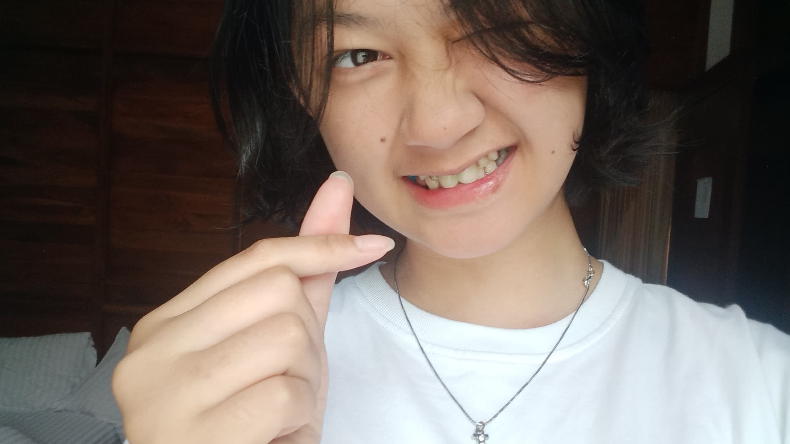
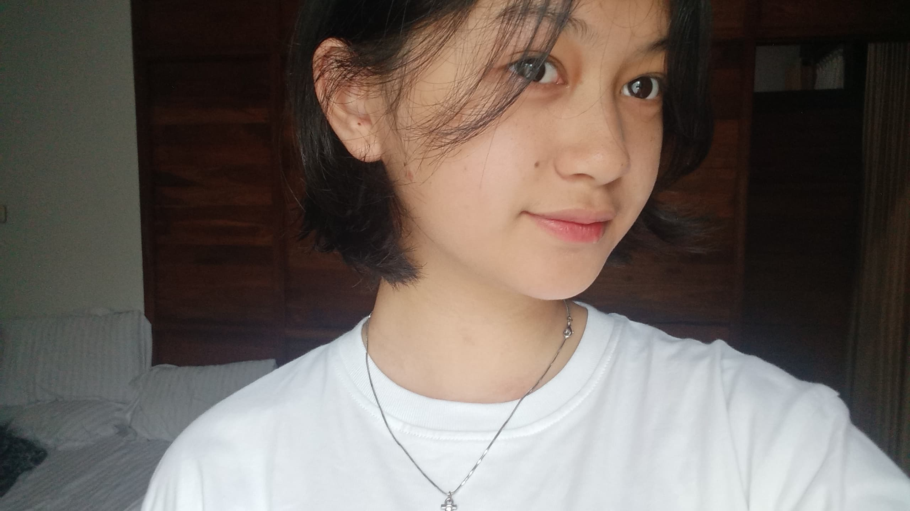
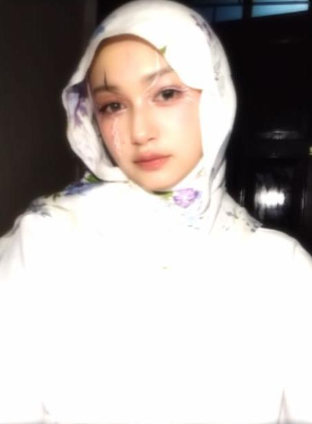
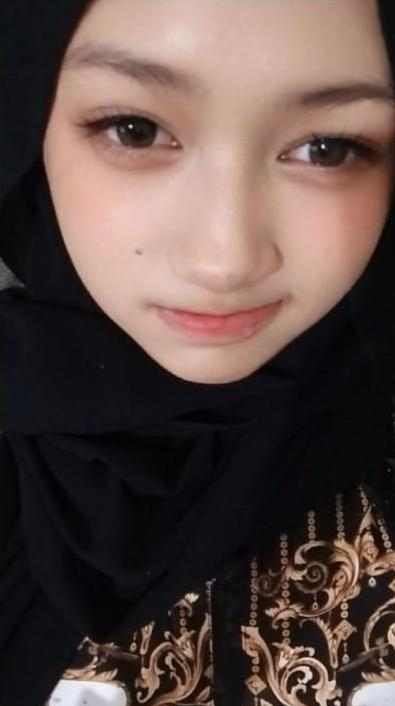
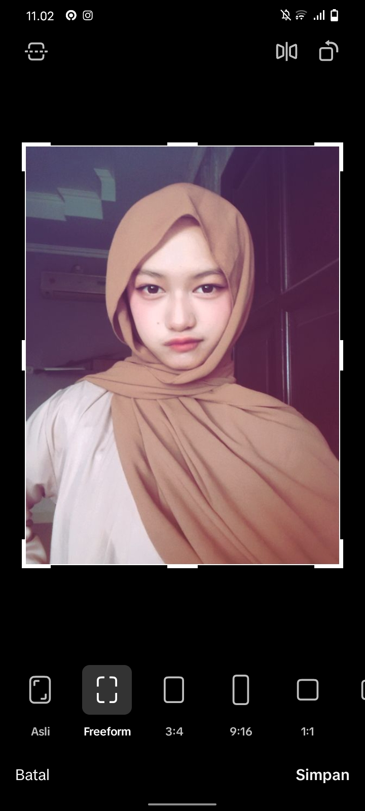
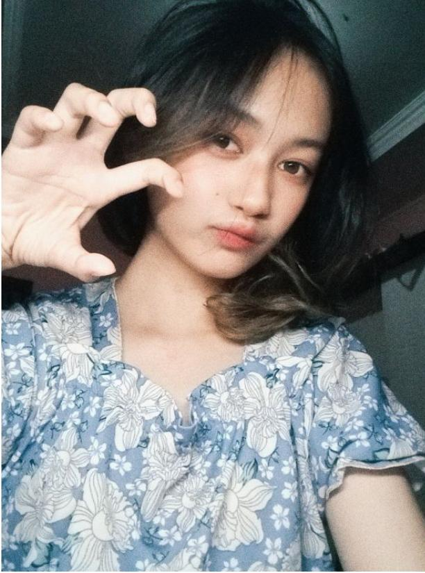
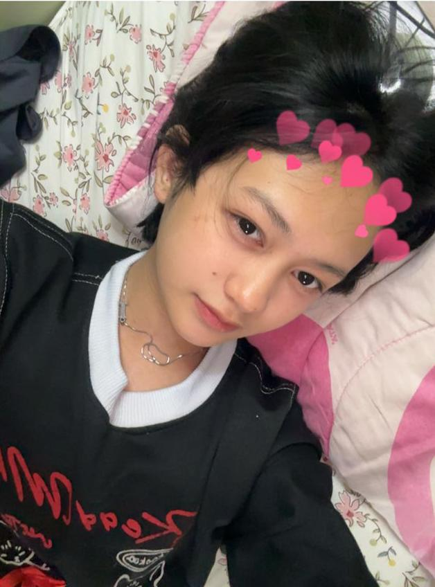
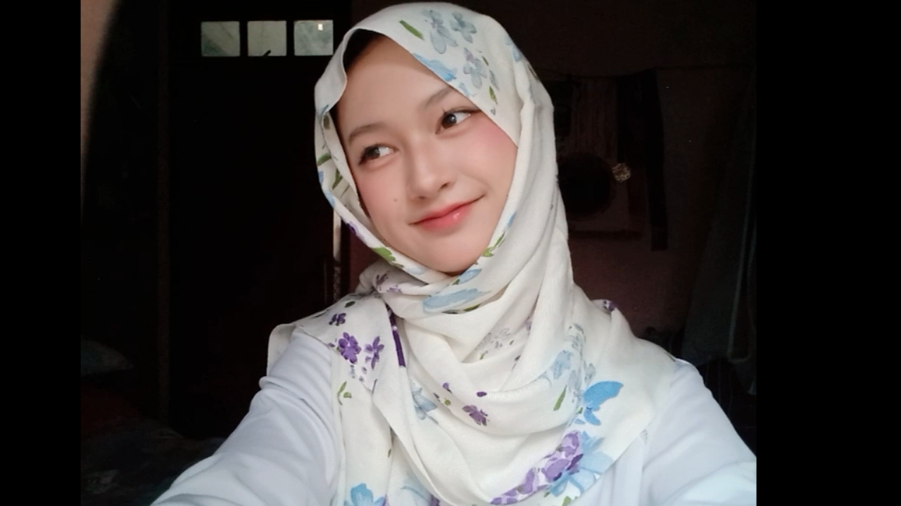

Hari ini dunia merayakan keberhasilanmu, dan aku adalah salah satu orang yang paling bangga.

Hai Sayang,
Selamat atas kelulusanmu! Semua kerja keras, dan perjuanganmu akhirnya terbayar lunas hari ini.
Melihatmu memakai baju wisuda membuatku sadar betapa beruntungnya aku memiliki pasangan yang hebat dan berdedikasi sepertimu. Ini barulah awal dari petualangan besar yang menantimu di luar sana.
Apapun yang terjadi selanjutnya, ingat ya, aku akan selalu ada di sini untuk mendukungmu, menyemangatimu, dan mencintaimu di setiap langkahmu.
With all my love,
❤️ for my first love
Sayangku cantikku bbyku mommyku,
Sekali lagi, selamat wisuda ya! Hari ini kamu terlihat sangat cantik dan bersinar. Yuk, habis ini kita rayakan bareng! 🍰💐